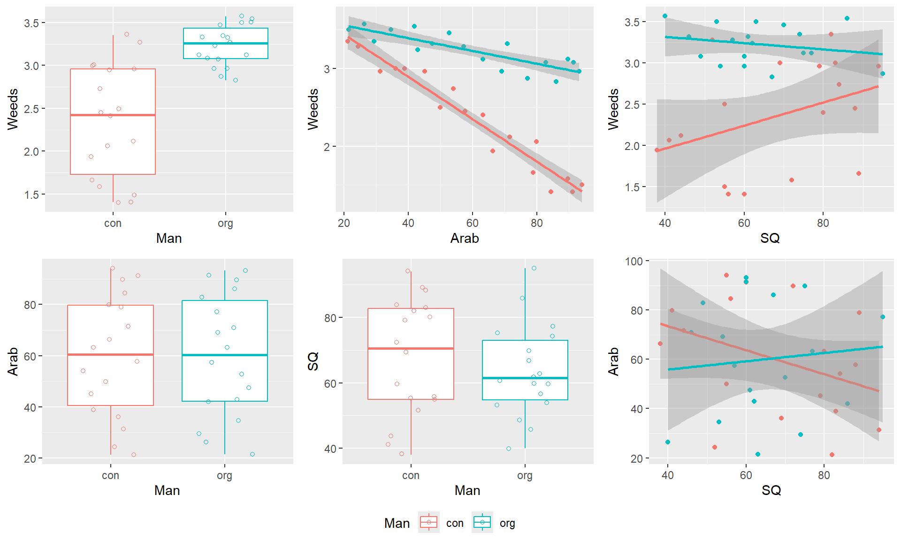
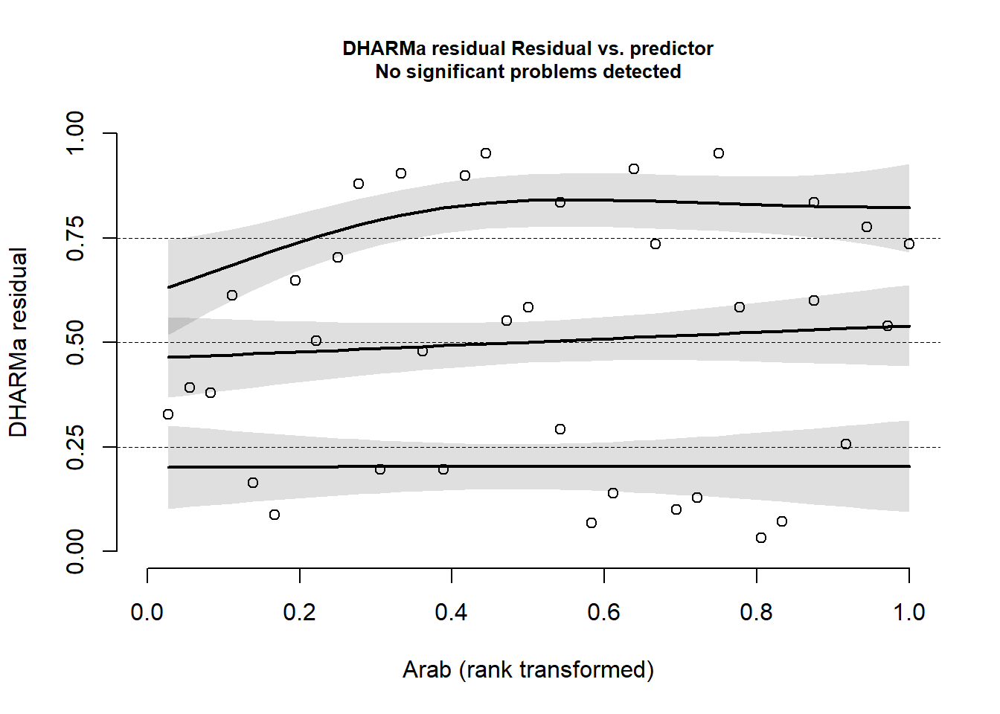

Das richtige Modell kann niemals mit absoluter Sicherheit bestimmt werden.
Je einfacher ein Modell ist, desto besser. “the principle of parsimony: the correct explanation is the simplest explanation”
“Man muss die Dinge so einfach wie möglich machen. Aber nicht einfacher.” Albert Einstein
Prinzip der Parsimonität - Wie viele Parameter bedarf es um einen Elefanten zu modellieren?
36, B) 5, C) 10, D) 20 und E) 30 Parameter
The 30-term elephant “may not satisfy the third-grade art teacher, but would carry most chemical engineers into preliminary design.”
aus:
Burnham K, Anderson D. 2002. Model selection and multimodel inference. Springer, USA.
Wei J. 1975. Least square fitting of an elephant. Chemtech 5: 128-129.
Ziel der statistischen Modellierung
Selektion des minimalen adäquaten Modells aus einem großen Pool verschieden komplexer Modelle
Modelltypen
Volles Model (full model, maximales Modell, globales Modell, alle Erklärungsvariablen inkl. Interaktionen, Freiheitsgrade = n - p - 1)
candidate model (verschiedene mögliche Modelle die subsets des globalen Modells sind, d.h. unterschiedliche Erklärungsvariablen beinhalten)
Minimales adäquates Modell (mimimal adequate model, vereinfachtes oder “bestes” Modell entsprechend dem Prinzip der Parsimonität)
Nullmodell (null model, nur Intercept ~1, i.e. Mittelwert, wird gefittet)
Gesättigtes Modell (saturated model, eine Erklärungsvariable für jeden Punkt = keine Freiheitsgrade)
Erklärungsvariablen
Welche Erklärungsvariablen?
biologisch sinnvoll
entsprechend Fragestellung und Literatur
Designvariablen
Korrelation zwischen Erklärungsvariablen prüfen
kann zu verzerrten Schätzungen der Modellparameter und Fehler führen
Daumenregel r < 0,7
variance inflation factor VIF < 3
Anzahl Erklärungsvariablen an Stichprobenumfang anpassen
Gefahr der Überparametrisierung
Daumenregel je Parameter 10 Stichproben (häufig nicht realisierbar)
in landwirtschaftlichen Versuchen häufig 4 Wdh
Beziehungen zwischen Abhängigen und Erklärungsvariable überprüfen
Wie beeinflusst Bewirtschaftung (ökologisch vs. konventionell), Bodengüte (ertragreich vs. ertragsarm) und Landschaftsstruktur (strukturreich vs. strukturarm) die Pflanzendiversität in Weizenfeldern?
Untersuchungsdesign:
In 36 ökologisch und konventionell bewirtschafteten Weizenflächen (Man = con vs. org), welche sowohl in ihrer Bodengüte (Soil quality = SQ) als auch in der umgebenden Landschaftsstruktur (% Ackeranteil = Arab) variierten, wurde die Shannon-Diversität von Ackerwildkräutern (Weeds) ermittelt.
'data.frame': 36 obs. of 5 variables:
$ ID : num 1 2 3 4 5 6 7 8 9 10 ...
$ Man : chr "con" "org" "con" "org" ...
$ Arab : num 21.2 21.4 24.3 26.3 31.3 29.4 36.1 34.6 38.9 41.9 ...
$ SQ : num 82 63 52 40 94 74 69 53 83 86 ...
$ Weeds: num 3.35 3.5 3.28 3.57 2.96 3.35 3 3.5 3 3.54 ...
of$Man=as.factor(of$Man)summary(of)
ID Man Arab SQ Weeds
Min. : 1.00 con:18 Min. :21.20 Min. :38.00 Min. :1.410
1st Qu.: 9.75 org:18 1st Qu.:41.15 1st Qu.:54.75 1st Qu.:2.438
Median :18.50 Median :60.50 Median :62.50 Median :2.980
Mean :18.50 Mean :59.89 Mean :65.83 Mean :2.789
3rd Qu.:27.25 3rd Qu.:80.65 3rd Qu.:79.25 3rd Qu.:3.290
Max. :36.00 Max. :94.10 Max. :95.00 Max. :3.570
Wir plotten zunächst die Daten entsprechend unserer Fragestellung:
`geom_smooth()` using formula = 'y ~ x'
`geom_smooth()` using formula = 'y ~ x'
`geom_smooth()` using formula = 'y ~ x'

Im Plot oben rechts sehen wir, dass die Diversität in ökologisch bewirtschafteten Flächen höher ist als in konventionellen. Wir sehen aber auch, dass die Variabilität sich deutlich (und um ein Vielfaches) zwischen org und con unterscheidet.
# A tibble: 2 x 3
Man MW VAR
<fct> <dbl> <dbl>
1 con 2.35 0.441
2 org 3.23 0.0558
Ist das ein Problem? NEIN. Wir müssen die Residuen nach der Analyse auf Varianzhomogenität checken. Wenn unsere Erklärungsvariablen die Variabilität in den Daten erklären, dann sollte der Restfehler varianzhomogen sein.
Ausserdem sehen wir einen negativen Zusammenhang zwischen Weedsund Arab für org und con sowie eine mögliche Interaktion zwischen Weeds und SQ für org und con. Wir plotten ausserdem die Erklärungsvariablen gegeneinander, um mögliche Muster oder Zusammenhänge zu erkennen. Wir sehen, dass die Erklärungsvariablen Arab und SQ einen ähnlich weiten Wertebereich in orgund con aufweisen. Außerdem scheint es keinen Zusammenhang zwischen Arab und SQ zu geben. Gut so.
Korrelation zwischen Erklärungsvariablen testen
Bevor wir ein Modell formulieren, sollten wir die Korrelation zwischen den Erklärungsvariablen prüfen. Eng korrelierte Erklärungsvariablen können zu verzerrten Modellkoeffizienten, hohen Standardfehlern der Koeffizienten und damit zu instabilen Modellen und den falschen Schlussfolgerungen führen.
Um eine Korrelationsmatrix zu erstellen, müssen alle Variablen numerisch sein. Ich codiere hier die Variable Man in eine dummy-Variable um. Da sie nur zwei Levels hat, wird eine Spalte mit der Information Man = 1 und org = 0 ausreichen.
of$Man.con=ifelse(of$Man =="con", 1, 0)
Sollte man einen Faktor mit mehr als zwei Levels haben, könnte man so fortfahren: of$Man.org=ifelse(of$Man == "org", 1, 0).
Arab SQ Man.con
Arab 1.00 -0.16 0.00
SQ -0.16 1.00 0.13
Man.con 0.00 0.13 1.00
n= 36
P
Arab SQ Man.con
Arab 0.3495 0.9978
SQ 0.3495 0.4609
Man.con 0.9978 0.4609
Die Pearson Korrelationskoeffizienten sind alle < 0,7 bzw. >-0,7. Pearson Korrelationskoeffizienten nutzt man für lineare Zusammenhänge. Alternativ kann man die Spearman Rang-Korrelation nutzen, welche auf Rängen basiert und für monotone Zusammenhänge, i.e. monoton steigend oder fallend, eine Aussage trifft.
rcorr(as.matrix(of[,c(3:4, 6)]), type="spearman")
Arab SQ Man.con
Arab 1.00 -0.17 0.01
SQ -0.17 1.00 0.11
Man.con 0.01 0.11 1.00
n= 36
P
Arab SQ Man.con
Arab 0.3172 0.9753
SQ 0.3172 0.5142
Man.con 0.9753 0.5142
Eine gute Möglichkeit zur Abbildung einer Korrelationsmatrix bietet die library(corrplot) mit der Funktion corrplot() und corrplot.mixed().
Die potentielle Korrelation zwischen Erklärungsvariablen kann auch mit dem Variance Inflation Factor (VIF) getestet werden. Der VIF ist ein Maß für die Multikollineraität und gibt an, wie gut die einzelnen Erklärungsvariablen durch die anderen Erklärungsvariablen erklärt werden. Der VIF steht also für die Redundanz innerhalb der Erklärungsvariablen. Ich fitte ein Modell mit den Haupteffekten ohne Interaktionen. Solange alle VIFs < 3 sind, ist alles in Ordnung. Es gibt auch Quellen, die <5 oder gar <10 angeben. Sollte ein VIF höher als dein gewähltes Kriterium sein, dann entfernst du schrittweise die Variable mit dem höchsten VIF, berechnest den VIF erneut und führst dies fort, bis alle Variablen unterhalb dem gewählten Kriterium sind.
library(car)
Lade nötiges Paket: carData
Attache Paket: 'car'
Das folgende Objekt ist maskiert 'package:dplyr':
recode
vif(lm(Weeds~Man+Arab+SQ, data=of))
Man Arab SQ
1.016819 1.026933 1.043731
Alle Methoden führen zu dem Schluss, dass wir ein Modell mit allen drei Erklärungsvariablen formulieren können.
Modell formulieren
Ich fitte hier ein Modell inklusive Dreifachinteraktion, obwohl der Stichprobenumfang schon relativ klein ist und es auch Argumente dafür gibt, mit einem Modell nur mit Zweifachinteraktionen zu starten, i.e. ohne Dreifachinteraktion.
mod<-lm(Weeds~Arab*Man*SQ, data=of)summary(mod)
Call:
lm(formula = Weeds ~ Arab * Man * SQ, data = of)
Residuals:
Min 1Q Median 3Q Max
-0.271803 -0.100298 0.008768 0.093416 0.257560
Coefficients:
Estimate Std. Error t value Pr(>|t|)
(Intercept) 3.748e+00 5.252e-01 7.136 9.15e-08 ***
Arab -2.440e-02 7.899e-03 -3.090 0.00449 **
Manorg -1.398e-01 7.234e-01 -0.193 0.84813
SQ 3.181e-03 7.190e-03 0.442 0.66161
Arab:Manorg 2.073e-02 1.121e-02 1.849 0.07505 .
Arab:SQ -3.852e-05 1.140e-04 -0.338 0.73805
Manorg:SQ -1.419e-03 1.070e-02 -0.133 0.89538
Arab:Manorg:SQ -3.233e-05 1.695e-04 -0.191 0.85012
---
Signif. codes: 0 '***' 0.001 '**' 0.01 '*' 0.05 '.' 0.1 ' ' 1
Residual standard error: 0.1554 on 28 degrees of freedom
Multiple R-squared: 0.956, Adjusted R-squared: 0.945
F-statistic: 86.88 on 7 and 28 DF, p-value: < 2.2e-16
Modellvereinfachung, -selektion
Wir werden nun verschiedene Methoden der Modell- und Variablenselektion kennenlernen.
Schrittweise Modellvereinfachung mit drop1() basierend auf Teststatistik
Der klassische Weg: backward selection
maximales Modell fitten
schrittweises Entfernen von nicht-signifikanten Interaktionen
dabei mit der Interaktion der höchsten Ordnung beginnen (Dreifach- vor Zweifach-Interaktionen)
höchster p-Wert
altes mit neuem Modell vergleichen (Fehler/deviance)
Entfernen von nicht-signifikanten Erklärungsvariablen (Haupteffekte)
wenn nicht in signifikanter Interaktion enthalten
Das minimale adäquate Modell enthält nur noch signifikante Parameter*.
*nicht signifikante Haupteffekte sind im Modell möglich, wenn sie Teil einer signifikanten Interaktion sind
Wir testen mit der Funktion drop1() die Dreifachinteraktion.
drop1(mod, test="F") # Signifikanztest für Dreifachinteraktion
Single term deletions
Model:
Weeds ~ Arab * Man * SQ
Df Sum of Sq RSS AIC F value Pr(>F)
<none> 0.67648 -127.08
Arab:Man:SQ 1 0.00087887 0.67736 -129.03 0.0364 0.8501
Der p-Wert ist größer 0.05. Also können wir die Dreifachinteraktion entfernen, indem ein neues Modell mod1 durch die Funktion update() gefittet wird, welches alle Effekte wie mod besitzt ~., außer (daher das -) die Interaktion Arab:Man:SQ.
mod1<-update(mod, ~.-Arab:Man:SQ) # Term wird aus Model entfernt
Wenn wir nun die Funktion drop1() für mod1 nutzen, werden uns alle p-Werte für die Zweifachinteraktionen angezeigt.
drop1(mod1, test="F")
Single term deletions
Model:
Weeds ~ Arab + Man + SQ + Arab:Man + Arab:SQ + Man:SQ
Df Sum of Sq RSS AIC F value Pr(>F)
<none> 0.67736 -129.030
Arab:Man 1 1.48614 2.16351 -89.224 63.6264 8.501e-09 ***
Arab:SQ 1 0.00958 0.68695 -130.525 0.4103 0.5268
Man:SQ 1 0.02171 0.69908 -129.894 0.9297 0.3429
---
Signif. codes: 0 '***' 0.001 '**' 0.01 '*' 0.05 '.' 0.1 ' ' 1
Arab:SQ hat den höchsten p-Wert (und > 0,05), also raus damit.
Single term deletions
Model:
Weeds ~ Arab + Man + SQ + Arab:Man
Df Sum of Sq RSS AIC F value Pr(>F)
<none> 0.70830 -131.423
SQ 1 0.00188 0.71018 -133.327 0.0824 0.776
Arab:Man 1 1.66223 2.37052 -89.935 72.7506 1.238e-09 ***
---
Signif. codes: 0 '***' 0.001 '**' 0.01 '*' 0.05 '.' 0.1 ' ' 1
Der p-Wert für SQ als Haupteffekt erscheint, weil SQ nicht mehr in einer Interaktion enthalten ist. SQ hat den höchsten p-Wert (und > 0,05), also raus damit.
mod4<-update(mod3, ~.-SQ)drop1(mod4, test="F") #
Single term deletions
Model:
Weeds ~ Arab + Man + Arab:Man
Df Sum of Sq RSS AIC F value Pr(>F)
<none> 0.71018 -133.33
Arab:Man 1 1.7458 2.45599 -90.66 78.665 3.92e-10 ***
---
Signif. codes: 0 '***' 0.001 '**' 0.01 '*' 0.05 '.' 0.1 ' ' 1
p < 0,05, wir sollten keine weitere Variable entfernen.
summary(mod4)
Call:
lm(formula = Weeds ~ Arab + Man + Arab:Man, data = of)
Residuals:
Min 1Q Median 3Q Max
-0.27082 -0.12469 0.01851 0.09372 0.25381
Coefficients:
Estimate Std. Error t value Pr(>|t|)
(Intercept) 3.983767 0.097888 40.697 < 2e-16 ***
Arab -0.027254 0.001525 -17.868 < 2e-16 ***
Manorg -0.263862 0.137806 -1.915 0.0645 .
Arab:Manorg 0.019036 0.002146 8.869 3.92e-10 ***
---
Signif. codes: 0 '***' 0.001 '**' 0.01 '*' 0.05 '.' 0.1 ' ' 1
Residual standard error: 0.149 on 32 degrees of freedom
Multiple R-squared: 0.9538, Adjusted R-squared: 0.9495
F-statistic: 220.2 on 3 and 32 DF, p-value: < 2.2e-16
Analog gibt es auch eine Funktion add1() bei der eine forward selection durchgeführt werden kann.
Sowohl die klassische backward also auch die forward selection sind für Modelle mit wenigen Erklärungsvariablen denkbar.
Übung 6.1.
Die Aktivität von Lurchen wurde in den drei Habitattypen (Teichumgebung, Hecke und Wald) bei unterschiedlichen Witterungsbedingungen (Temperatur und Luftfeuchte) gemessen.
Importiere die Daten Lurche.xlsx und mach dich mit den Daten vertraut.
Gleiches Muster für den Zusammenhang zwischen Aktivität und Luftfeuchte.
Die Korrelationsmatrix zeigen eine enge Korrelation (r = 0.86) zwischen Temperatur und Luftfeuchte. Die Korrelationskoeffizienten der Dummy-Variablen zeigen die Unterschiele der kontinuierlichen Variablen in den jeweiligen Habitattypen an. z.B. ist in Habitattyp Teich die die Temperatur höher (r = 0,47) und im Wald kälter (r = 0,37).
Aufgrund der engen Korrelation zwischen Temperatur und Luftfeuchte sollten wir nur eine der beiden Variablen ins Modell nehmen. Aber welche? Das können wir basierend auf unserem Fachwissen entscheiden. Oder den Variance Inflation Faktor nutzen:
Basierend auf VIF sollten wir Temperatur aus dem Modell entfernen, weil es am stärksten durch die anderen beiden Erklärungsvariablen erklärt werden kann. Ob das so gut ist, werden wir weiter unten sehen.
Single term deletions
Model:
Akt ~ Temp * Hab * Hum
Df Sum of Sq RSS AIC F value Pr(>F)
<none> 1639.9 285.23
Temp:Hab:Hum 2 54.349 1694.2 284.17 1.2926 0.2804
Single term deletions
Model:
Akt ~ Temp * Hab
Df Sum of Sq RSS AIC F value Pr(>F)
<none> 1733.8 278.24
Temp:Hab 2 148.93 1882.7 281.66 3.6076 0.0314 *
---
Signif. codes: 0 '***' 0.001 '**' 0.01 '*' 0.05 '.' 0.1 ' ' 1
summary(Mod.T)
Call:
lm(formula = Akt ~ Temp * Hab, data = dat)
Residuals:
Min 1Q Median 3Q Max
-11.8564 -2.7385 -0.2605 2.4763 10.2738
Coefficients:
Estimate Std. Error t value Pr(>|t|)
(Intercept) 9.3750 5.3346 1.757 0.08249 .
Temp 1.1049 0.3632 3.042 0.00313 **
HabTeich 4.6331 8.0730 0.574 0.56757
HabWald -2.6065 7.9357 -0.328 0.74339
Temp:HabTeich 0.9145 0.5128 1.783 0.07812 .
Temp:HabWald -0.5432 0.5612 -0.968 0.33588
---
Signif. codes: 0 '***' 0.001 '**' 0.01 '*' 0.05 '.' 0.1 ' ' 1
Residual standard error: 4.543 on 84 degrees of freedom
Multiple R-squared: 0.9117, Adjusted R-squared: 0.9065
F-statistic: 173.5 on 5 and 84 DF, p-value: < 2.2e-16
Option 1 und 3 führen zum gleichen Modell. Aber auch Option 2 liefert ein sehr gutes Modell mit hohem R² und signifikannter Interaktion.
Wir könnten beide Modelle per AIC vergleichen. Mod.T hat den niedrigeren AIC und wäre damit besser. Mehr zum AIC kommt weiter unten.
AIC(Mod.H, Mod.T)
df AIC
Mod.H 7 543.2706
Mod.T 7 535.6523
Modellselektion basierend auf Informationskriterien
Wenn wir eine Vielzahl an Erklärungsvariablen haben und damit eine Vielzahl an potentiellen Erklärungsmodellen, führt eine schrittweise Vereinfachung zu vielen aufeinanderfolgenden Signifikanztests. Die durchgeführten Signifikanztests sind nicht voneinander unabhängig. Das Problem des multiplen Testens tritt auf. Der p-Wert verliert seine eigentliche Bedeutung und müsste um die Anzahl der Tests korrigiert werden. Daher steht diese Vorgehensweise bei vielen Anwendern in der Kritik.
Besser ist es, die Modell- bzw. Variablenselektion basierend auf Informationskriterien durchzuführen.
Informationskriterien wägen für uns zwischen der Anpassungsgüte (fit) und der Komplexität (Anzahl Parameter k) des Modells ab:
Das Akaikes Informationskriterium (Akaike Information Criterion - AIC) berechnet sich aus der Log-Likelihood und der Anzahl Modellparameter.
Das korrigierte Akaikes Informationskriterium (AICc) bestraft stärker um die Anzahl der Modellparameter, wenn der Stichprobenumfang klein ist und verhindert damit stärker den Overfit als AIC. Daumenregel: Nutze AICc wenn das Verhältnis aus Stichprobenumfang (n) zu Anzahl Modellparameter (k) n/k < 40 ist.
Bayessches Informationskriterium (Bayesian Information Criterion - BIC) berücksichtigt neben Log-likelihood und Anzahl Modellparametern auch den Stichprobenumfang.
Wichtig
Je niedriger der AIC (AICc, BIC), desto besser das Modell. Es zählt nicht der absolute Wert (z.B. AIC = 100 ist unwichtig).
Beispiel:
Modell
AIC
Modell 1
100
Modell 2
98.8
Modell 3
108
Damit wäre Modell 2 das bessere Modell.
Während die absoluten AIC-Werte also keine Bedeutung haben, können die delta AIC-Werte genutzt werden, um das Level of Empirical Support des jeweiligen Modells einzuordnen. Burnham und Anderson (2002) Model Selection and Multimodel Inference Seite 170 geben folgende Kennwerte an:
delta AIC
Level of Empirical Support
0-2
substantial
4-7
considerably less
> 10
none
Entsprechend wären Modell 2 und Modell 1 von Bedeutung, während Modell 3 keine Berücksichtigung erfahren muss.
Wichtig
Es können nur Modelle verglichen werden, die auf den gleichen Datensatz (i.e. gleiche Abhängige y) gefittet wurden.
Von einem Vergleich von Modellen, die mit verschiedenen R-Packages gefitted wurden, würde ich abraten.
Auch negative AIC-Werte können auftreten. Auch hier gilt, je kleiner desto besser.
Schrittweise Verfahren basierend auf AIC mit step()
Mit der Funktion step() kann eine Modellselektion automatisiert auf Basis des AIC erfolgen. Hier ein Beispiel für eine Rückwärtsselektion, bei dem ausgehend vom vollen Modell schrittweise Erklärungsvariablen entfernt werden und die daraus resultierenden Modelle via AIC verglichen werden. Diese Prozedur stoppt, wenn beim Entfernen der Variablen der AIC (wieder) ansteigen würde.
step backward
mod.b<-step(mod)
Start: AIC=-127.08
Weeds ~ Arab * Man * SQ
Df Sum of Sq RSS AIC
- Arab:Man:SQ 1 0.00087887 0.67736 -129.03
<none> 0.67648 -127.08
Step: AIC=-129.03
Weeds ~ Arab + Man + SQ + Arab:Man + Arab:SQ + Man:SQ
Df Sum of Sq RSS AIC
- Arab:SQ 1 0.00958 0.68695 -130.525
- Man:SQ 1 0.02171 0.69908 -129.894
<none> 0.67736 -129.030
- Arab:Man 1 1.48614 2.16351 -89.224
Step: AIC=-130.52
Weeds ~ Arab + Man + SQ + Arab:Man + Man:SQ
Df Sum of Sq RSS AIC
- Man:SQ 1 0.02135 0.70830 -131.423
<none> 0.68695 -130.525
- Arab:Man 1 1.59208 2.27903 -89.352
Step: AIC=-131.42
Weeds ~ Arab + Man + SQ + Arab:Man
Df Sum of Sq RSS AIC
- SQ 1 0.00188 0.71018 -133.327
<none> 0.70830 -131.423
- Arab:Man 1 1.66223 2.37052 -89.935
Step: AIC=-133.33
Weeds ~ Arab + Man + Arab:Man
Df Sum of Sq RSS AIC
<none> 0.71018 -133.33
- Arab:Man 1 1.7458 2.45599 -90.66
summary(mod.b)
Call:
lm(formula = Weeds ~ Arab + Man + Arab:Man, data = of)
Residuals:
Min 1Q Median 3Q Max
-0.27082 -0.12469 0.01851 0.09372 0.25381
Coefficients:
Estimate Std. Error t value Pr(>|t|)
(Intercept) 3.983767 0.097888 40.697 < 2e-16 ***
Arab -0.027254 0.001525 -17.868 < 2e-16 ***
Manorg -0.263862 0.137806 -1.915 0.0645 .
Arab:Manorg 0.019036 0.002146 8.869 3.92e-10 ***
---
Signif. codes: 0 '***' 0.001 '**' 0.01 '*' 0.05 '.' 0.1 ' ' 1
Residual standard error: 0.149 on 32 degrees of freedom
Multiple R-squared: 0.9538, Adjusted R-squared: 0.9495
F-statistic: 220.2 on 3 and 32 DF, p-value: < 2.2e-16
step forward
Beim Vorwärtsverfahren müssen wir zunächst das Null-Modell fitten
mod0<-lm(Weeds~1, data=of)
und dann die Argumente scope und direction bedienen.
Start: AIC=-28.64
Weeds ~ 1
Df Sum of Sq RSS AIC
+ Man 1 6.9169 8.4531 -48.164
+ Arab 1 6.0033 9.3667 -44.469
<none> 15.3700 -28.640
+ SQ 1 0.1196 15.2504 -26.921
Step: AIC=-48.16
Weeds ~ Man
Df Sum of Sq RSS AIC
+ Arab 1 5.9971 2.4560 -90.660
+ SQ 1 0.4693 7.9838 -48.220
<none> 8.4531 -48.164
- Man 1 6.9169 15.3700 -28.640
Step: AIC=-90.66
Weeds ~ Man + Arab
Df Sum of Sq RSS AIC
+ Arab:Man 1 1.7458 0.7102 -133.327
<none> 2.4560 -90.660
+ SQ 1 0.0855 2.3705 -89.935
- Arab 1 5.9971 8.4531 -48.164
- Man 1 6.9107 9.3667 -44.469
Step: AIC=-133.33
Weeds ~ Man + Arab + Man:Arab
Df Sum of Sq RSS AIC
<none> 0.71018 -133.33
+ SQ 1 0.00188 0.70830 -131.42
- Man:Arab 1 1.74581 2.45599 -90.66
summary(mod.both)
Call:
lm(formula = Weeds ~ Man + Arab + Man:Arab, data = of)
Residuals:
Min 1Q Median 3Q Max
-0.27082 -0.12469 0.01851 0.09372 0.25381
Coefficients:
Estimate Std. Error t value Pr(>|t|)
(Intercept) 3.983767 0.097888 40.697 < 2e-16 ***
Manorg -0.263862 0.137806 -1.915 0.0645 .
Arab -0.027254 0.001525 -17.868 < 2e-16 ***
Manorg:Arab 0.019036 0.002146 8.869 3.92e-10 ***
---
Signif. codes: 0 '***' 0.001 '**' 0.01 '*' 0.05 '.' 0.1 ' ' 1
Residual standard error: 0.149 on 32 degrees of freedom
Multiple R-squared: 0.9538, Adjusted R-squared: 0.9495
F-statistic: 220.2 on 3 and 32 DF, p-value: < 2.2e-16
Alle drei Verfahren haben zum gleichen besten Modell geführt. Das ist nicht immer so. Zusätzlich wird mit der Funktion step() immer nur ein bestes Modell selektiert und es bleibt offen, ob es noch andere ähnlich gute Modelle gibt.
Übung 6.2.
Modelliere die Aktivität der Lurche mit der step-Funktion.
Mit der Funktion dredge() aus dem Paket MuMIn können verschiedene candidate models (i.e. alle Kombinationsmöglichkeiten zwischen den Erklärungsvariablen) anhand eines Informationskriteriums z.B. rank = "AICc" verglichen werden. Weitere Informationskriterien werden über das Argument extra = alist(AICc, AIC, BIC, Cp, "R^2") berechnet. Zudem wird auch das Akaike Gewicht (weight) angegeben, welches eine relatives Maß für die Wahrscheinlichkeit (englisch: rate of support or evidence) ist, dass das jeweilige Modell das bessere unter den candidate models ist. Im Allgemeinen haben Modelle innerhalb von delta AIC < 2 einen ähnlich guten support.
library(MuMIn)dd=dredge(mod)
Error in dredge(mod): 'global.model''s 'na.action' argument is not set and options('na.action') is "na.omit"
Wir müssen im globalen Modell mod das Argument na.action = na.fail setzen oder die R-Optionen mit options(na.action = "na.fail") verändern.
Wichtig
Es dürfen keine missing values (NA) sowohl in der Abhängigen als auch in den Erklärungsvariablen vorkommen. Nutze ggfls. die Funktion complete.cases().
mod<-lm(Weeds~Arab*Man*SQ, data=of, na.action=na.fail)dd=dredge(mod, rank ="AICc", extra =alist(AICc, AIC, BIC, "R^2"))
Fixed term is "(Intercept)"
Mit dem Argument m.lim=c(0,4) kann man die Anzahl der Parameter beschränken, z.B. auf minimal 0 und maximal 4 Parameter. Die obige Funktion würde dann so aussehen: dredge(mod, rank = "AICc", extra = alist(AICc, AIC, BIC, "R^2"), m.lim=c(0,4)). Da wir aber ein recht überschaubares Modell haben, ist dies nicht nötig.
die Modellparameter: (Int) für Intercept, Arb, Man, SQ, Arb:Ma, Arb:SQ, und Man:SQ
wobei für Faktoren nur ein + angezeigt wird, wenn diese im Modell enthalten sind
für kontinuierliche Erklärungsvariablen wird der geschätzte Koeffizient angezeigt
die Informationskriterien: AICc, AIC, BIC, R²
die degree of freedoms und die Log-Likelihood
das Informationskriterium, welches zum Vergleich der Modelle genutzt wurde (hier AICc)
das daraus berechnete delta (hier delta AICc)
das Akaike weight, welches alle candidate models vergleicht (die Summe ergibt 1) und damit ein Maß für relative Güte der Modelle ist.
Mit der Funktion subset() werden die Top-Modelle innerhalb delta AICc < 4 (oder <2) angezeigt.
subset(dd, delta <4)
Global model call: lm(formula = Weeds ~ Arab * Man * SQ, data = of, na.action = na.fail)
---
Model selection table
(Int) Arb Man SQ Arb:Man AICc AIC BIC R^2 df logLik
12 3.984 -0.02725 + + -27.16 -29.16 -21.25 0.9538 5 19.582
16 4.025 -0.02739 + -0.0004843 + -24.36 -27.26 -17.76 0.9539 6 19.630
AICc delta weight
12 -27.16 0.0 0.802
16 -24.36 2.8 0.198
Models ranked by AICc(x)
Zur Präsentation der Ergebnisse würde man zur obigen Tabelle noch das globale Modell und das Nullmodell hinzufügen.
Das beste Modell mit dem niedrigsten AICc ist wieder: Weeds ~ Arab + Man + Arab:Man
Wir können auf das beste Model mit der Funktion get.models() zugreifen.
summary(get.models(dd, 1)[[1]])
Call:
lm(formula = Weeds ~ Arab + Man + Arab:Man + 1, data = of, na.action = na.fail)
Residuals:
Min 1Q Median 3Q Max
-0.27082 -0.12469 0.01851 0.09372 0.25381
Coefficients:
Estimate Std. Error t value Pr(>|t|)
(Intercept) 3.983767 0.097888 40.697 < 2e-16 ***
Arab -0.027254 0.001525 -17.868 < 2e-16 ***
Manorg -0.263862 0.137806 -1.915 0.0645 .
Arab:Manorg 0.019036 0.002146 8.869 3.92e-10 ***
---
Signif. codes: 0 '***' 0.001 '**' 0.01 '*' 0.05 '.' 0.1 ' ' 1
Residual standard error: 0.149 on 32 degrees of freedom
Multiple R-squared: 0.9538, Adjusted R-squared: 0.9495
F-statistic: 220.2 on 3 and 32 DF, p-value: < 2.2e-16
mod.dd=get.models(dd, 1)[[1]]
Die Bedeutung der Erklärungsvariablen (Importance) kann durch das sum of Akaike weight berechnet werden, indem für alle Variablen die Akaike Gewichte der Modelle aufsummiert werden, in denen die Variable enthalten ist. Die entsprechenden sum of Akaike weights variieren dann zwischen 1 (wichtig) und 0 (unwichtig).
Mit der Funktion sw() wird das sum of Akaike weight über alle Modelle berechnet:
sw(dd)
Arab Man Arab:Man SQ Man:SQ Arab:SQ Arab:Man:SQ
Sum of weights: 1 1 1 0.3 0.08 0.06 <0.01
N containing models: 14 14 6 14 6 6 1
Mit dem Argument subset wird das sum of Akaike weight über alle Modelle innerhalb delta AICc < 4 berechnet:
sw(subset(dd, delta <=4))
Arab Man Arab:Man SQ
Sum of weights: 1.0 1.0 1.0 0.2
N containing models: 2 2 2 1
Burnham and Anderson (2002) empfehlen die erste Methode.
Modellvergleiche basierend auf AIC mit eigenem Set an Candidate Models
Wenn man ein sehr komplexes globales Modell mit vielen Erklärungsvariablen und Interaktionen hat, kann das zu sehr vielen candidate models führen. Das wird dann auch gerne als “fishing” bezeichnet und wird ebenso wenig gern gesehen. Daher empfehlen Burnham und Anderson (2002) a priori ein Set an candidate models zu erstellen und diese zu vergleichen.
Auch hierfür kann das Packet MuMIn genutzt werden.
library(MuMIn)options(na.action ="na.fail") # wir ändern die globalen Optionen
Wir erstellen das globale Modell mod und verschiedene candidate modelsmod1 bis mod11 und das Nullmodell mod0. Natürlich können nur Modelle als “beste” Modelle identifiziert werden, wenn sie vorher auch gefittet wurden. Daher ist die Wahl der geeigneten candidate models die größte wissenschaftliche Herausforderung.
mod<-lm(Weeds~Arab*Man*SQ, data=of)mod1<-lm(Weeds~Arab*Man+SQ, data=of)mod2<-lm(Weeds~Arab+Man*SQ, data=of)mod3<-lm(Weeds~Arab*SQ+Man, data=of)mod4<-lm(Weeds~Arab*Man, data=of)mod5<-lm(Weeds~Man*SQ, data=of)mod6<-lm(Weeds~Arab*SQ, data=of)mod7<-lm(Weeds~Arab+Man, data=of)mod8<-lm(Weeds~Man+SQ, data=of)mod9<-lm(Weeds~Arab+SQ, data=of)mod10<-lm(Weeds~Arab+Man+SQ, data=of)mod0<-lm(Weeds~1, data=of)mod11<-lm(Weeds~(Arab+Man+SQ)^2, data=of)# ist das gleiche wie Arab*Man+Arab*SQ+Man*SQ
Wir nutzen die Funktion mod.sel(), um für alle Modelle das AICc, delta AICc und das Akaike weight zu berechnen und ins Objekt out.put zu schreiben.
Wir erstellen nun eine Tabelle mit den Informationskriterien und den Erklärungsvariablen der Modelle.
Die [c(9,11:13)] greifen auf 4 Spalten zu und müssen bei anderen Beispielen entsprechend der Anzahl Spalten (i.e. Erklärungsvariablen) ggfls. angepasst werden.
df AICc delta weight Model
mod4 5 -27.2 0.0 0.79 Weeds ~ Arab * Man
mod1 6 -24.4 2.8 0.19 Weeds ~ Arab * Man + SQ
mod11 8 -19.5 7.6 0.02 Weeds ~ (Arab + Man + SQ)^2
mod 9 -16.0 11.2 0.00 Weeds ~ Arab * Man * SQ
mod7 4 14.8 42.0 0.00 Weeds ~ Arab + Man
mod10 5 16.2 43.4 0.00 Weeds ~ Arab + Man + SQ
mod3 6 17.3 44.5 0.00 Weeds ~ Arab * SQ + Man
mod2 6 17.7 44.9 0.00 Weeds ~ Arab + Man * SQ
mod5 5 56.8 84.0 0.00 Weeds ~ Man * SQ
mod8 4 57.2 84.4 0.00 Weeds ~ Man + SQ
mod9 4 63.0 90.1 0.00 Weeds ~ Arab + SQ
mod6 5 65.1 92.3 0.00 Weeds ~ Arab * SQ
mod0 2 75.9 103.1 0.00 Weeds ~ 1
Auch hier könnten wir wieder die Tabelle auf die Modelle reduzieren innerhalb delta AICc < 4 plus globales Modell und Nullmodell.
sel.table[c(1,2,4,13),c(5,1:4)]
Model df AICc delta weight
mod4 Weeds ~ Arab * Man 5 -27.2 0.0 0.79
mod1 Weeds ~ Arab * Man + SQ 6 -24.4 2.8 0.19
mod Weeds ~ Arab * Man * SQ 9 -16.0 11.2 0.00
mod0 Weeds ~ 1 2 75.9 103.1 0.00
Modellvergleiche basierend auf AIC mit glmulti()
Ein weiteres Package für Modellvergleiche ist glmulti mit gleichnamiger Funktion. Hier können wir eine Vielzahl an Erklärungsvariablen in einem Vektor (hier pred.var) im Argument xr angeben. Mit maxsize legen wir die maximale Anzahl an Erklärungsvariablen fest. Mit level=1 werden nur Haupteffekte gefittet (Bsp. models1), mit level=2 werden Haupteffekte und Zweifachinteraktionen gefittet (Bsp. models2).
library(glmulti)pred.var=c("Arab", "Man", "SQ")# alle Erklärungsvariablenmodels1 <-glmulti("Weeds", xr= pred.var, of, crit = aicc, maxsize =8, # max 8 Erklärungsvariablen im Modell -> hier nicht wichtig level =1, # nur Haupteffektefitfunc = lm, # lineares Modelconfsetsize =10, # damit kann man die Anzahl der besten Modelle, die in models1 gespeichert werden, begrenzenmarginality=TRUE, # zur Erklärung vergleiche Bsp. models2 mit models3plotty = F, report = F)tmp_1 <-weightable(models1)tmp_1
model aicc weights
1 Weeds ~ 1 + Man + Arab 14.79426 6.720119e-01
2 Weeds ~ 1 + Man + Arab + SQ 16.22886 3.279881e-01
3 Weeds ~ 1 + Man 56.75004 5.209496e-10
4 Weeds ~ 1 + Man + SQ 57.23396 4.089908e-10
5 Weeds ~ 1 + Arab 60.44469 8.213205e-11
6 Weeds ~ 1 + Arab + SQ 62.97609 2.316467e-11
7 Weeds ~ 1 75.88754 3.640339e-14
8 Weeds ~ 1 + SQ 77.99259 1.270677e-14
model aicc
1 Weeds ~ 1 + Man + Arab + Man:Arab -27.16372
2 Weeds ~ 1 + Man + Arab + SQ + Man:Arab -24.36270
3 Weeds ~ 1 + Man + Arab + SQ + Man:Arab + Man:SQ -22.36104
4 Weeds ~ 1 + Man + Arab + SQ + SQ:Arab + Man:Arab -21.73091
5 Weeds ~ 1 + Man + Arab + SQ + SQ:Arab + Man:Arab + Man:SQ -19.53353
6 Weeds ~ 1 + Man + Arab 14.79426
7 Weeds ~ 1 + Man + Arab + SQ 16.22886
8 Weeds ~ 1 + Man + Arab + SQ + SQ:Arab 17.29047
9 Weeds ~ 1 + Man + Arab + SQ + Man:SQ 17.70841
10 Weeds ~ 1 + Man + Arab + SQ + SQ:Arab + Man:SQ 18.93916
weights
1 7.016487e-01
2 1.729359e-01
3 6.356687e-02
4 4.638730e-02
5 1.546125e-02
6 5.433232e-10
7 2.651791e-10
8 1.559601e-10
9 1.265495e-10
10 6.839188e-11
Mit dem Argument marginality=FALSE werden auch Modelle mit Interaktionen ohne Haupteffekte gefittet. Hierzu gibt es geteilte Meinungen. Es entstehen mehr mögliche Modelle aus denen das/die beste/n Modell/e gewählt werden können. Gleichzeitig kann aber damit auch ein einfacheres Modell mit weniger Erklärungsvariablen gewählt werden.
Im Bespiel models3 sieht man als zweitbestes Modell Weeds ~ Arab + Man:Arab, welches ohne Haupteffekt Man gefittet ist.
models3 <-glmulti("Weeds", xr= pred.var, of, crit = aicc, maxsize =8, level =2, confsetsize =10, marginality=FALSE, # fit interaction even if main term is not in the modelplotty = F, report = F)tmp_3 <-weightable(models3)tmp_3
model aicc weights
1 Weeds ~ 1 + Man + Arab + Man:Arab -27.16372 0.32769924
2 Weeds ~ 1 + Arab + Man:Arab -25.96858 0.18028255
3 Weeds ~ 1 + Arab + SQ + Man:Arab + Man:SQ -25.43742 0.13823316
4 Weeds ~ 1 + Man + Arab + SQ:Arab + Man:Arab -24.53325 0.08795781
5 Weeds ~ 1 + Man + Arab + SQ + Man:Arab -24.36270 0.08076828
6 Weeds ~ 1 + Arab + SQ + Man:Arab -23.32596 0.04809674
7 Weeds ~ 1 + Arab + SQ:Arab + Man:Arab -23.27813 0.04696025
8 Weeds ~ 1 + Arab + SQ + SQ:Arab + Man:Arab + Man:SQ -22.86406 0.03817823
9 Weeds ~ 1 + Man + Arab + SQ + Man:Arab + Man:SQ -22.36104 0.02968838
10 Weeds ~ 1 + Arab + SQ + SQ:Arab + Man:Arab -21.77388 0.02213536
Alle hier aufgeführten Wege haben zum gleichen besten Modell geführt.
summary(mod4)
Call:
lm(formula = Weeds ~ Arab * Man, data = of)
Residuals:
Min 1Q Median 3Q Max
-0.27082 -0.12469 0.01851 0.09372 0.25381
Coefficients:
Estimate Std. Error t value Pr(>|t|)
(Intercept) 3.983767 0.097888 40.697 < 2e-16 ***
Arab -0.027254 0.001525 -17.868 < 2e-16 ***
Manorg -0.263862 0.137806 -1.915 0.0645 .
Arab:Manorg 0.019036 0.002146 8.869 3.92e-10 ***
---
Signif. codes: 0 '***' 0.001 '**' 0.01 '*' 0.05 '.' 0.1 ' ' 1
Residual standard error: 0.149 on 32 degrees of freedom
Multiple R-squared: 0.9538, Adjusted R-squared: 0.9495
F-statistic: 220.2 on 3 and 32 DF, p-value: < 2.2e-16
Tip
Die Wahl des besten Modells basiert zwar immer auf einem Informationskriterium (AIC, BIC), der/die R-UserIn kann sich aber auch für das zweit- oder drittbeste Modell entscheiden, wenn darin bspw. Erklärungsvariablen sind, die einfacher oder schneller zu messen sind und das Modell für zukünftige Vorhersagen genutzt werden soll.
Übung 6.3.
Modelliere die Aktivität der Lurche mit der dredge-Funktion.
Tip
Bitte schau Dir die Lösung bis ganz zum Ende an.
library(MuMIn)Mod=lm(Akt~Temp*Hab*Hum, data=dat, na.action = na.fail) # Modell mit korrelierten Erklärungsvaribalen
Wir haben 5 Modelle innerhalb dAICc<4 und ein bestes Modell innerhalb dAICc<2.
Das beste Modell hat die Erklärungsvariablen Habitattype und Temperatur und deren Zweifachinteraktion. Sowohl im zweit- als auch drittbesten Modell sind beide korrelierte Erklärungsvariablen enthalten.
Schauen wir uns die Modellkoeffizienten und die Effektplots an:
bestes Modell
library(effects)
lattice theme set by effectsTheme()
See ?effectsTheme for details.
summary(get.models(dd, 1)[[1]])
Call:
lm(formula = Akt ~ Hab + Temp + Hab:Temp + 1, data = dat, na.action = na.fail)
Residuals:
Min 1Q Median 3Q Max
-11.8564 -2.7385 -0.2605 2.4763 10.2738
Coefficients:
Estimate Std. Error t value Pr(>|t|)
(Intercept) 9.3750 5.3346 1.757 0.08249 .
HabTeich 4.6331 8.0730 0.574 0.56757
HabWald -2.6065 7.9357 -0.328 0.74339
Temp 1.1049 0.3632 3.042 0.00313 **
HabTeich:Temp 0.9145 0.5128 1.783 0.07812 .
HabWald:Temp -0.5432 0.5612 -0.968 0.33588
---
Signif. codes: 0 '***' 0.001 '**' 0.01 '*' 0.05 '.' 0.1 ' ' 1
Residual standard error: 4.543 on 84 degrees of freedom
Multiple R-squared: 0.9117, Adjusted R-squared: 0.9065
F-statistic: 173.5 on 5 and 84 DF, p-value: < 2.2e-16
Das zweitbeste Modell zeigt sehr breite Konfidenzintervalle für die Luftfeuchte und das drittbeste Modell sehr unwahrscheinliche Zusammenhänge mit der Luftfeuchte in den verschiedenen Habitaten.
Daher würde ich diese Modelle nicht interpretieren. Um diese Modelle aufgrund der engen Korrelation aus den candidate models auszuschließen, gibt es folgende Möglichkeit:
Nun plotten wir noch die Residuen gegen die Erklärungsvariablen
plotResiduals(simulationOutput, form = of$Man)
Die Varianzen der Residuen sind sehr ähnlich. Wir erinnern uns an den Plot Weeds ~ Man, wo starke Unterschiede in den Varianzen vorkamen. Offensichtlich hat die Erklärungsvariable Arab einen Großteil dieser Variabilität erklärt.
plotResiduals(simulationOutput, form = of$Arab)

Hier sehen wir eine leichte Kurvatur bei niedrigen Werten in Arab, aber es scheint noch ok zu sein. Wir können zusätzlich noch die vom Modell vorhergesagten vs. gemessenen Daten plotten. Je enger die Beziehung, desto besser.
Arab Man fit se lower upper
1 21.2 con 3.405986 0.06869007 3.266069 3.545903
2 21.9 con 3.386908 0.06777461 3.248856 3.524961
3 22.7 con 3.365105 0.06673391 3.229173 3.501038
4 23.4 con 3.346027 0.06582835 3.211939 3.480115
5 24.1 con 3.326950 0.06492773 3.194696 3.459203
6 24.9 con 3.305147 0.06390474 3.174977 3.435316
ggplot(of, aes(x=Arab, y=Weeds, colour=Man)) +geom_ribbon(data = ef1, aes(x = Arab, y =NULL, ymin = lower, ymax = upper, linetype=NA, fill=Man), alpha =0.4, show.legend = F)+geom_line(data = ef1, aes(x = Arab, y = fit))+geom_point()+ylab("Shannondiversität")+xlab("Ackeranteil (%)")
Wir sehen, dass die Diversität
mit zunehmendem Ackeranteil sinkt
generell höher in öko vs. konventionell ist
aber je strukturreicher eine Landschaft (je niedriger der Ackeranteil) desto kleiner fallen auch die Unterschiede zwischen öko vs. konventionell bewirtschafteten Feldern aus.
Wir können dies auch gezielt mit einem Posthoc-Test testen.
Arab = 22:
Man emmean SE df lower.CL upper.CL .group
con 3.38 0.0676 32 3.25 3.52 a
org 3.54 0.0671 32 3.40 3.68 a
Arab = 80:
Man emmean SE df lower.CL upper.CL .group
con 1.80 0.0466 32 1.71 1.90 a
org 3.06 0.0464 32 2.97 3.16 b
Confidence level used: 0.95
significance level used: alpha = 0.05
NOTE: If two or more means share the same grouping symbol,
then we cannot show them to be different.
But we also did not show them to be the same.
Hier wird nun an zwei gewählten Punkten (i.e. Ackeranteil von 22% und 80%) die vorhergesagte Diversität in öko vs. kon gestestet. Bei 22% Ackeranteil unterscheidet sich die Diversität nicht signifikant zwischen öko und konventionall, bei 80% Ackeranteil schon.
Man beachte den Unterschied zu folgendem Test, bei dem alle vorhergesagten Levels miteinander verglichen werden.
Man Arab emmean SE df lower.CL upper.CL .group
con 22 3.38 0.0676 32 3.25 3.52 a
org 22 3.54 0.0671 32 3.40 3.68 a
con 80 1.80 0.0466 32 1.71 1.90 b
org 80 3.06 0.0464 32 2.97 3.16 c
Confidence level used: 0.95
P value adjustment: tukey method for comparing a family of 4 estimates
significance level used: alpha = 0.05
NOTE: If two or more means share the same grouping symbol,
then we cannot show them to be different.
But we also did not show them to be the same.
Die 22% und 80% sind hier relativ willkürlich gewählt (i.e. zur Demonstration). Man hätte auch das 20- und 80-Perzentil wählen können.
Arab = 36.1:
Man emmean SE df lower.CL upper.CL .group
con 3.00 0.0505 32 2.90 3.10 a
org 3.42 0.0502 32 3.32 3.53 b
Arab = 84.5:
Man emmean SE df lower.CL upper.CL .group
con 1.68 0.0514 32 1.58 1.79 a
org 3.03 0.0511 32 2.92 3.13 b
Confidence level used: 0.95
significance level used: alpha = 0.05
NOTE: If two or more means share the same grouping symbol,
then we cannot show them to be different.
But we also did not show them to be the same.
Weitere Alternativen zur Modellinterpretation, i.e. Abbildung der Ergebnisse:
Wir erstellen einen Testdatensatz td mit allen im besten Modell (mod4) enthaltenen Variablen.
summary(of)
ID Man Arab SQ Weeds
Min. : 1.00 con:18 Min. :21.20 Min. :38.00 Min. :1.410
1st Qu.: 9.75 org:18 1st Qu.:41.15 1st Qu.:54.75 1st Qu.:2.438
Median :18.50 Median :60.50 Median :62.50 Median :2.980
Mean :18.50 Mean :59.89 Mean :65.83 Mean :2.789
3rd Qu.:27.25 3rd Qu.:80.65 3rd Qu.:79.25 3rd Qu.:3.290
Max. :36.00 Max. :94.10 Max. :95.00 Max. :3.570
Man.con fit
Min. :0.0 Min. :1.419
1st Qu.:0.0 1st Qu.:2.373
Median :0.5 Median :3.006
Mean :0.5 Mean :2.789
3rd Qu.:1.0 3rd Qu.:3.295
Max. :1.0 Max. :3.544
Arab Man fit lwr upr
1 21.00000 con 3.411437 3.270985 3.551888
2 29.11111 con 3.190378 3.070923 3.309832
3 37.22222 con 2.969319 2.868908 3.069730
4 45.33333 con 2.748260 2.663611 2.832909
5 53.44444 con 2.527201 2.452914 2.601488
6 61.55556 con 2.306142 2.234435 2.377849
7 69.66667 con 2.085083 2.007396 2.162771
8 77.77778 con 1.864025 1.773477 1.954572
9 85.88889 con 1.642966 1.535111 1.750820
10 94.00000 con 1.421907 1.294093 1.549721
11 21.00000 org 3.547325 3.407978 3.686672
12 29.11111 org 3.480667 3.362037 3.599297
13 37.22222 org 3.414009 3.314143 3.513875
14 45.33333 org 3.347351 3.262982 3.431721
15 53.44444 org 3.280693 3.206479 3.354908
16 61.55556 org 3.214035 3.142327 3.285744
17 69.66667 org 3.147377 3.069782 3.224973
18 77.77778 org 3.080719 2.990472 3.170967
19 85.88889 org 3.014061 2.906763 3.121360
20 94.00000 org 2.947404 2.820416 3.074391
Alternativ nutzen wir die predict-Funktion mit dem Argument se.fit für die Berechnung der Standardfehler, die wir für die Berechnung des Konfidenzintervalls nutzen.
p<-predict(mod4, newdata=td, se.fit=T) str(p)
List of 4
$ fit : Named num [1:20] 3.41 3.19 2.97 2.75 2.53 ...
..- attr(*, "names")= chr [1:20] "1" "2" "3" "4" ...
$ se.fit : Named num [1:20] 0.069 0.0586 0.0493 0.0416 0.0365 ...
..- attr(*, "names")= chr [1:20] "1" "2" "3" "4" ...
$ df : int 32
$ residual.scale: num 0.149
td$p<-p$fittd$p.se<-p$se.fit#t-Wert für Konfidenzintervallt.val<-qt(0.975, mod4$df)mod4$df
[1] 32
#berechnet Konfidenzintervall t * SEtd$CI.lwr<-td$p-t.val*td$p.setd$CI.upr<-td$p+t.val*td$p.se
Das Vorhersageintervall
zeigt an, in welchem Bereich mit 95 %-er Wahrscheinlichkeit zukünftige Beobachtungen liegen
im Allgemeinen größer (weiter) als das Konfidenzintervall
Warning in ensurePredictor(simulationOutput, form): DHARMa:::ensurePredictor:
character string was provided as predictor. DHARMa has converted to factor
automatically. To remove this warning, please convert to factor before
attempting to plot with DHARMa.
Temp = 15:
Hab emmean SE df lower.CL upper.CL .group
Wald 15.2 1.025 84 13.2 17.2 a
Hecke 25.9 0.848 84 24.3 27.6 b
Teich 44.3 1.008 84 42.3 46.3 c
Confidence level used: 0.95
P value adjustment: tukey method for comparing a family of 3 estimates
significance level used: alpha = 0.05
NOTE: If two or more means share the same grouping symbol,
then we cannot show them to be different.
But we also did not show them to be the same.
Wie stark nimmt die Aktivität mit zunehmender Temperatur zu?